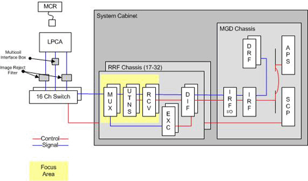
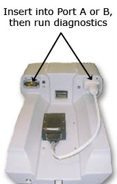

Proprietary to General Electric Company
Direction 5440000, Rev# 5
Signa HDxt Service Methods
Module Version 1.0, Version Date 4/26/07
Proprietary to General Electric Company |
Diagnostics >> RRF Chassis
The MCR 2 and MCR 3 tools are very similar in functionality. The primary operational difference is that the MCR 2 tool cannot be used with systems that have the HDx LPCA. Legacy systems that have been upgraded to 32-channels or have a forward production LPCA were provided with a new MCR tool that replaces the MCR 2 tool.
The purpose of the MCR 2 is to isolate signal problems with the LPCA connectors (ports A & B) and the cabling LPCA and the 16-channel Switch. This is accomplished by running the MCR 2 diagnostic in conjunction with the 16-channel Switch diagnostic and the System Cabinet Loopback diagnostic. Then, using procedures outlined in the MCR 2 Troubleshooting document, examine the resultant data in order to pinpoint where failures are present.
The MCR diagnostic should only be performed when the System Cabinet Loopback and 16-channel Switch diagnostics pass and a receive signal issue persists.
LPCA connectors (ports A & B)
Cabling between the LPCA and the 16-channel Switch
Secondary
16-channel Switch
Cabling between the 16-channel Switch and the MUX Board(s)
Receive Chain (MUX, UTNS, Receiver boards)
The MCR diagnostic should only be performed when the System Cabinet Loopback and 16-channel Switch diagnostics pass and a receive signal issue persists.
MCR2 Tool (1.5T or 3.0T version must match the system)
(For 1.5T) Part # 5115007
(For 3.0T) Part # 5115008
Coax to Coax receptacle (In the RF Kit)5117335
| ||||
| Strong Magnetic Field! | ||||
| Ferrous materials can become dangerous projectiles in the presence of the magnetic field Produced by the Signa Magnet. | ||||
| Do not Bring any ferromagnetic tools or equipment into the magnet room. |
Illustration 1: RRF Multi-Coil Receive II Diagnostic Functional Block Diagram

Select test to run.
Test both LPCA A & B ports (default) or
Test an individual port.
Connect the appropriate MCR 2 Tool to the LPCA port being tested as shown below.

| NOTE: | If the MCR 2 tool is not connected or is connected to the incorrect port, the diagnostic will provide instructions for correct tool installation. |
Click [Run].
Watch for pop-ups that provide further instructions.
The diagnostic will display detailed results.
Failures are highlighted in red, while passing data is blue.
To troubleshoot failures see MCR 2 Troubleshooting.
Basic statistics are provided for each port (8 channels).
Failures are highlighted in red font while passing data is always highlighted in blue font.
Detailed results are provided for each channel that consists of the following: Noise, Signal, Signal as a percentage of the Port's maximum Signal, Signal/Noise ratio, and pass/fail details for each of the validations performed on the data.
Detailed results are logged in the summary file /usr/g/service/datamine/rxOsc_Summary.log.
Actual signal data is logged in data files within /usr/g/service/datamine.
When executed in conjunction with the System Cabinet Loopback diagnostic, system problems can be isolated to
the signal source – the exciter
the RRF Chassis’ receive chain – the MUX, UTNS, and receiver boards
the 16 Channel switch, cabling & hardware, and input port on the MUX boards
Once testing is complete, perform a [TPS Reset] before continuing.
None